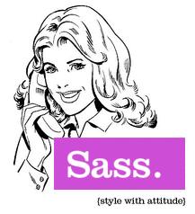
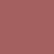

Tech Talk: Sass
CSS con esteroides
Juan Ignacio Serra
- @jiserra
- Diseñador UX/UI
- Trabajo hace +4 años con preprocesadores
Problema:
En el desarrollo moderno,
CSS por si solo no alcanza.
vendor prefixes, @media queries, grillas, font-face, etc, hacen que nuestras hojas de estilos crezcan cada vez más.
Solución:
Preprocesadores!
- 
¿Qué son?
- Lenguajes que nos ayudan a escribir CSS
¿Cuáles existen?
- Less, Stylus y Sass
¿Beneficios?
- Desarrollo veloz, menor tiempo.
- Variables, iteraciones, funciones…
- Mantenimiento.
- Jugás mejor al metegol
Sass
2 sintaxis:
- SASS: Indentación
- SCSS: Similar a CSS tradicional
.article
border-top: 2px solid #eee
h3
margin-top: 1em
SCSS
.article {
border-top: 2px solid #eee;
h3 {
margin-top: 1em;
}
}
Features
Nesting
SCSS
.article {
border-top: 2px solid #eee;
h3 {
margin-top: 1em;
}
}
CSS
.article { border-top: 2px solid #eee; }
.article h3 { margin-top: 1em; }
&
Referencia a los selectores padres
SCSS
.nav a {
color: #fff;
&:hover {
color: #000;
}
}
CSS
.nav a { color: #fff; }
.nav a:hover { color: #000; }
SCSS
.main a {
color: #fff;
.contacto & { color: #000; }
}
CSS
.main a { color: #fff; }
.contacto .main a { color: #000; }
Variables!
SCSS
$link-color: #f0f0f0;
$link-hover: #ccc;
.nav a {
color: $link-color;
&:hover {
color: $link-hover;
}
}
CSS
.nav a { color: #f0f0f0; }
.nav a:hover { color: #ccc; }
Operaciones matemáticas
1em + 1em; // 2em
1em - 1em; // 0em
6px * 4 // 24px
18px / 3 // 6px
Ejemplo en layout:
SCSS
$contenedor: 960px;
$main: 680px;
$separacion: 30px;
#sidebar {
width: $contenedor - $main - $separacion;
}
CSS
#sidebar { width: 250px; }
Mixins
SCSS
@mixin hide-text{
overflow:hidden;
text-indent:-9000px;
display:block;
}
h1 {
@include hide-text();
background-image: url('logo.png');
}
CSS
h1 {
overflow: hidden;
text-indent: -9000px;
display: block;
background-image: url("logo.png");
}
SCSS
@mixin borde-color($color) {
border: 4px solid $color;
}
.imagen {
@include borde-color('#f00');
}
CSS
.imagen {
border: 4px solid #f00;
}
@extend
(o como Sass ganó la carrera)
SCSS
.button {
background-color: blue;
text-align: center;
padding: 5px 10px;
}
.button-delete {
@extend .button;
background-color: red;
}
CSS
.button, .button-delete {
background-color: blue;
text-align: center;
padding: 5px 10px;
}
.button-delete {
background-color: red;
}
%: Selectores silenciosos
SCSS
%red-bg {
background-color: red;
}
.window {
@extend %red-bg;
width: 200px;
}
CSS
.window {
background-color: red;
width: 200px;
}
Funciones!
if, for, while, each, etc…
(esas cosas que les encantan a los devs)
SCSS
@for $i from 1 to 5 {
.col-#{$i} {
margin-left: $i * 50px;
}
}
CSS
.col-1 { margin-left: 50px; }
.col-2 { margin-left: 100px; }
.col-3 { margin-left: 150px; }
.col-4 { margin-left: 200px; }
SCSS
$social: facebook, twitter, plus, github, myspace;
@each $icono in $social {
.#{$icono}-icon {
background-image: url('#{$icono}.png');
}
}
CSS
.facebook-icon { background-image: url("facebook.png"); }
.twitter-icon { background-image: url("twitter.png"); }
.plus-icon { background-image: url("plus.png"); }
.github-icon { background-image: url("github.png"); }
.myspace-icon { background-image: url("myspace.png"); }
Funciones de colores!
(o como usar menos Photoshop)
SCSS
a { color: rgba(#00f, .75) }
p { background: rgba(#fff, 0.2) }
CSS
a { color: rgba(0, 0, 255, 0.75); }
p { background: rgba(255, 255, 255, 0.2); }
- darken(#219ce3, 30%)
- lighten(#0c415f, 30%)
- saturate(#a46060, 50%) 
- desaturate(#e32121, 50%)
Demo Time!
@import
Al importar _archivos.scss los compila en un archivo final, con solo 1 petición!
// css/estilos.scss
@import "principal";
@import "reset", "tipografia";
<link rel="stylesheet" type="text/css" href="css/estilos.css">
Librería de mixins
Funciones de Sass
Extensiones
Mixins
- Utilidades generales
- Clearfixes, font stacks, position…
- Vendor prefixes
- Animations, transforms, filters…
- CSS3
- gradients, background-image, columns, flexbox…
SCSS
.animacion {
@include animation(scale 1.0s ease-in, slide 2.0s ease);
}
CSS
.animacion {
-webkit-animation: scale 1s ease-in, slide 2s ease;
-moz-animation: scale 1s ease-in, slide 2s ease;
animation: scale 1s ease-in, slide 2s ease;
}
SCSS
.transformar {
@include transform(translateY(50px));
}
CSS
.transformar {
-webkit-transform: translateY(50px);
-moz-transform: translateY(50px);
-ms-transform: translateY(50px);
-o-transform: translateY(50px);
transform: translateY(50px);
}
Ejemplo de un mixin para Responsive Design
(la hice yo, no me la roben!)
SCSS
@mixin breakpoint($point) {
@if $point == extra {
@media (min-width: 1142px) { @content; }
}
@else if $point == large {
@media (min-width: 954px) { @content; }
}
@else if $point == medium {
@media (min-width: 768px) { @content; }
}
@else if $point == small {
@media (min-width: 480px) { @content; }
}
@else {
@media (min-width: $point) { @content; }
}
}
¿Cómo se usa?
SCSS
@include breakpoint(small) {
header {
text-align: left;
}
.square {
width: 300px;
}
}
CSS
@media (min-width: 480px) {
header {
text-align: left;
}
.square {
width: 300px;
}
}
SCSS
.wrap {
padding: 20%;
@include breakpoint(medium) {
padding: 0 2%;
}
}
CSS
.wrap {
padding: 20%;
}
@media (min-width: 768px) {
.wrap {
padding: 0 2%;
}
}
Librerías de Bourbon
(agrandando el combo)

Framework de Grillas

Estructura y estilos listos (tipo Bootstrap)

Componentes y patrones
¿Cómo usamos SASS?
- En proyectos Ruby
- Instalándolo con Ruby en Mac/Linux
- Apps: http://sass-lang.com/install
- Libsass: el fórmula 1
Resumiendo:
- Ahorramos tiempo de desarrollo
- Operaciones matemáticas
- Mixins, funciones de imagenes
- Funciones de colores
- Librerías y componentes con Bourbon
- Profit!
¿Preguntas?
Muchas gracias!
- Para practicar sin instalar:
- http://sassmeister.com
- Sass oficial:
- http://sass-lang.com
- Bourbon:
- http://bourbon.io